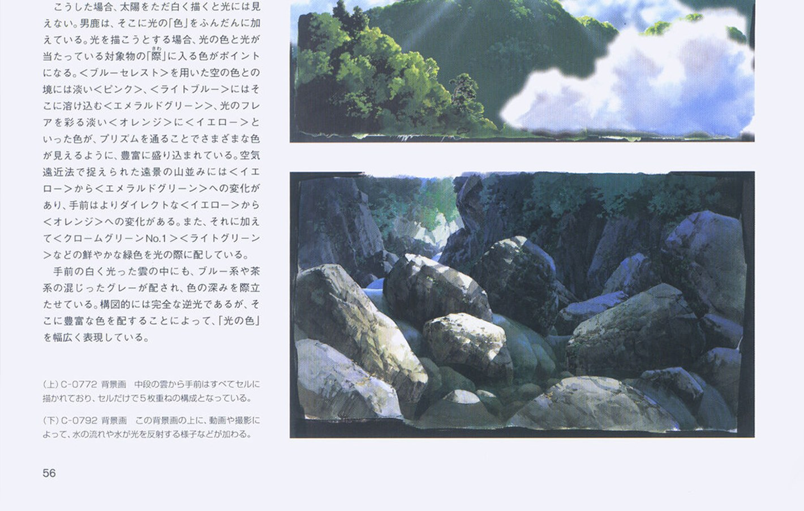

Reading Oga's book: the model
Front page: the tutorial. The full model, with every plate and page, is MODEL.md in the study folder; this is the part a pixel painter uses.
Kazuo Oga, 男鹿和雄画集Ⅱ (Ghibli THE ART series, 2005). 148 scanned pages in Japanese:
- the making of the cover painting in thirteen photographed steps (pp.4–11);
- Chapter 1, "Techniques of Mononoke" (技法, pp.36–63);
- Chapter 2, "Expression in Pompoko" (表現, pp.88–108);
- a long conversation with the art director Naoya Tanaka (pp.128–139).
The scan's image number is the printed folio plus two. Write that at the top of your notes.

nb157. The front matter as a contact sheet. Make these first, twenty pages to a sheet, to see the book's shape before reading.
How the book teaches
It never states its model as a list. Each principle comes with one painting, often the colour board beside the final background, and Oga or Tanaka says what changed and why. The plate is the teaching. I read every page as half-page crops at about 1.15×, so I could read the Japanese and look at the painting in the same glance:
# work/crop.py IDX part [scale] part: t,b (halves), tl,tr,bl,br, or x0,y0,x1,y1 fractions
P={'t':(0,0,1,.52),'b':(0,.48,1,1),'tl':(0,0,.52,.52),'tr':(.48,0,1,.52),'bl':(0,.48,.52,1),'br':(.48,.48,1,1)}
f=P[part] if part in P else tuple(map(float,part.split(',')))
c=im.crop((int(f[0]*W),int(f[1]*H),int(f[2]*W),int(f[3]*H)))

nb030. p.44, "unmuddied mixing" (濁らない混色), C-0081: the greens that bridge light and shadow.
The model, compressed
Each principle has the book's term, the page, and the rule I took from it. The rules in bold are the ones that carried into pixels and have a how-to.
| Principle | Book | Rule |
|---|---|---|
| Ground stage (地塗り) | pp.46–49, cover steps 5–8 | Settle light direction, overall colour and atmosphere at the lowest level of detail, "as close to finished as possible". Detail is a thin last layer that must not break it. |
| Grasp the crowd (群れを捉える) | p.48, C-1646 | A mass of like things is one organised impression with a few extracted members, never member by member. "Drawing everything crushes the space." |
| Coloured greys | pp.48, 57, 103 (C39-5) | Neutrals are always tinted: brown-, green-, purple-, red-, yellow-grey. In low light the greys carry the whole range of hue. |
| Unmuddied mixing | p.44 (C-0081), p.45 (C-0804) | A big value range is held by saturated mid-tones; accents laid in unmixed; many half-mixed colours side by side. |
| Living brushwork | pp.50–51 | "Know beforehand what shape each brush motion makes." Moss is not drawn leaf by leaf. In light, a few lit marks stand for the unpainted mass (C-0822). |
| Space and planes (抜け, 面) | pp.52–55 | "Intentionally severing connected space gives depth" (C-0064). The ground is one plane with undulations; near grass seen from above, far from the side (C-0095). |
| The light source | pp.56–57, 94–97 | "Don't spread the light around; concentrate it." Shadow about 2/3 (C-0792). Reflected light takes the sky's colour, loosened with the object's own. The light's colour at its edge (際, C-0772). Snow: two shadow families (p.96). |
| Density at the points | pp.58–59 | "Concentrate density at the points and the whole feels dense." A cut's length decides how much it gets. |
| Omission | pp.60–61 | Keep form, colour and light; drop members. Shadow contrast softens with distance (C-0007 board vs background). |
| Air | pp.98–99 | Far things approach the sky colour; dry air gives crisp distance, humid air narrows the range. |
| Seasonal note | pp.104–108 | One seasonal flower works like a kigo (season word): a minimum of objects conveys the season. |

nb053. p.56: C-0772 (the sun's colour) above C-0792 (the gorge, shadow about two-thirds). These two plates became how-to 4.

nb045. p.52, "awareness of space and planes": C-0064 at the foot of the page. A ridge line and a band of tree shadow sever the near meadow from the far village.
The cover's working order (pp.4–11)
This is the most practical part of the book, because it's a procedure:
- Pencil straight onto the paper; stretch it wet.
- Ground, far to near: - sky (white over everything, then grey and celeste worked in); - the far peak painted into the wet sky with the sky's own colours, conifers made by "the flat brush shifted vertically"; - middle rock; - near shrubs with "a flat brush with its tip splayed on purpose"; - fine branches already in the ground.
- Dry.
- One deliberately strong touch on the middle rocks to judge balance, then "add only where it's weak".
- Lustrous darks in the shadows; the darks make the lights look lacking, so vivid brights; "don't rely on value difference alone".
- Rock texture; bright leaf shapes to make the shrub's contour stand out.
- Near leaves, grass, flowers; step back; about 11 hours from the ground stage.

nb014. Step 7, "whole colour": the splayed flat brush on the shrubs.

nb020. The finished cover on the desk.
One measurement trap
I measured his plates in OKLab and found his darkest 2% at L 0.35, against 0.20 for photos. Oga lifts his black point, I thought. The printed text on the same pages measured L 0.29–0.35: it was the printing and the scan. Correct each plate to its own page's ink and paper first (work/plates.py):
k=np.median(a[o[:max(50,len(o)//1000)]],0); w=np.median(a[o[-len(o)//100:]],0) # page black, page white
out=np.clip((im-k)/(w-k),0,1)
After correction his black point is like a photo's. And whole-picture statistics (shadow share, grey share, tint count) barely separate his plates from photos of the same subjects at all. What makes a picture his is where things go. Measure passages, not pages.

fig. What does survive a global look: his paintings, area-reduced to 160 px, still read almost completely. The ground-stage claim, seen from the other side.
Next: copying a passage, which is where the model starts to mean anything.